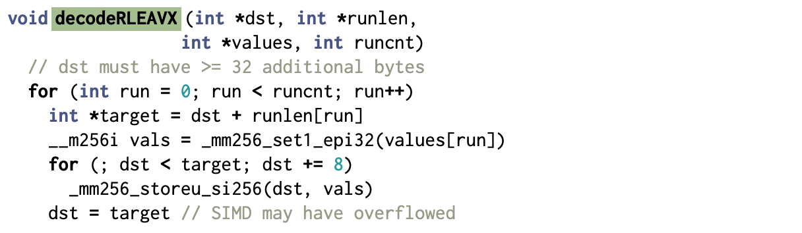
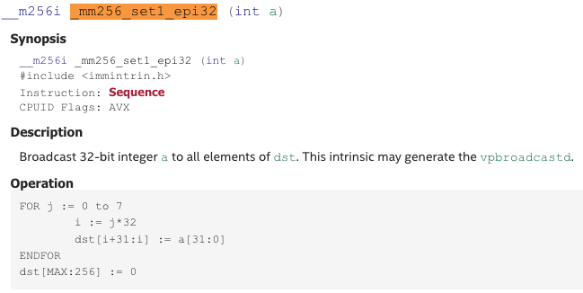
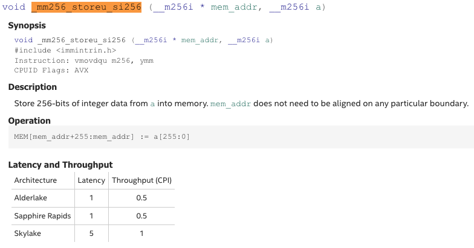
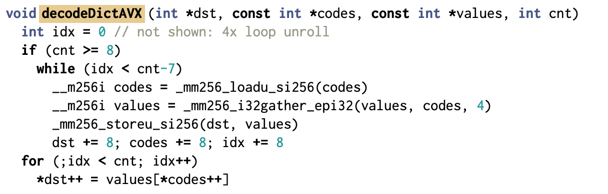
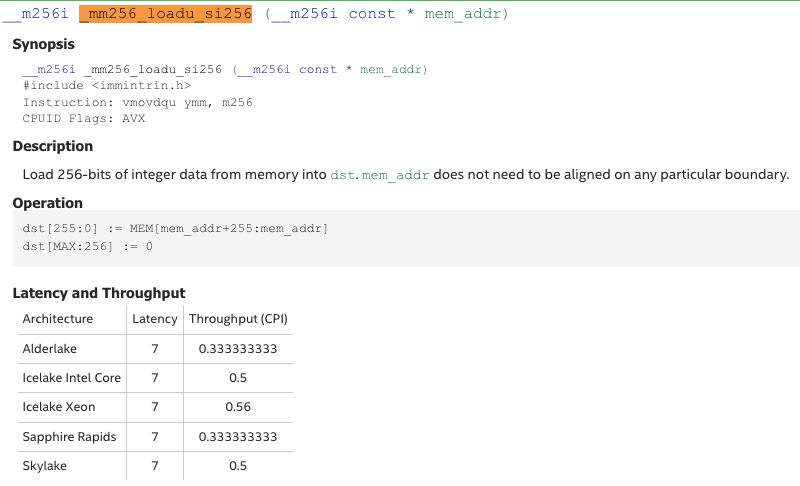
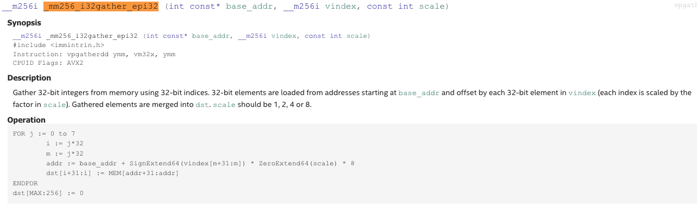

본 글은 논문 BtrBlocks - Efficient Columnar Compression for Data Lakes (SIGMOD '23) 를 읽고 정리한 글입니다.
별도의 명시가 없는 한, 본 글의 모든 그림은 위 논문에서 가져왔습니다.
목차
5. Fast Decompression
5.0. Overview
Tip Section 5.0 Overview
- 마찬가지로 논문에는 없는 section 이고, 형식상 주인장이 끼워 넣은 것이다.
5.0.1 Decompression speed is vital.
- Decompression speed 는 중요하다. 근데 왜?
- Cloud 에서 compute node 는 드럽게 비싸고 이놈의 사용시간을 줄이는 것이 비용최적화에 핵심이 된다.
- 이 드럽게 비싼 compute node 의 사용시간을 줄이는 것은 compression 의 관점에서 보자면 (1) compression ratio 를 늘려 Data Lake 에서 받아오는 속도를 빠르게 하는 것과 (2) 받아온 것을 빠르게 decompression 하는 것일 것이다.
- 근데 왜 decompression 만 생각할까? 그것은 OLAP 의 관점에서 봤을 때 decompression 만 하기 때문이다.
- Compression 작업은 뭐 OLTP 가 할 수도 있고 다른 누군가가 할 수도 있다. 어차피 Data Lake 이기 때문에 누군가가 compression 해서 여기에 투척하기만 하면 된다.
- 중요한 것은 이 데이터를 사용하려고 할 때는 OLAP 이 직접 decompression 해야 한다는 것이다.
- 어쨋든 (1) 는 위에서 충분히 설명 했고, 본 section 에서는 (2) 에 집중하려고 한다.
5.0.2. Improving decompression speed.
- Section 2.2.1 의 표를 참고하면, SIMD-FastPFOR, SIMD-FastBP128, FSST, Roaring 은 이미 공개된, 최적화된 구현체를 사용했다고 한다.
- 따라서 여기서는 나머지 scheme 들 (RLE, One-value, Dictionary, Frequency, Pseudodecimal) 에 대한 fast implementation 에 대해 이야기 해보려고 한다.
- 최적화를 위한 evaluation 은 다음의 고려사항이 있다고 한다.
- Dataset 은 (저자가 진짜 질리도록 강조하는 것 같은데) public BI dataset 을 사용했다고 한다.
- Evaluation 은 End-to-end 방식으로 진행됐다고 한다.
- 즉, 어떤 scheme
B를 최적화 하는 과정에서 만약A-B-C의 순서로 cascading 이 진행됐다면,B하나만의 시간을 측정한 것이 아니라A-B-C전체 시간을 측정해서 어느정도 개선되었는지를 비교했다고 한다. - 더 쉽게 말하면
A-B-C와A-B'-C간에 총 시간을 비교해서 개선율을 계산했다는 것. - BtrBlock 에서 모든 scheme 들이 cascading 될 수 있기 때문에, 개선한 scheme 이 cascading 되는 상황에서의 개선율을 계산한 것으로 보인다.
- 즉, 어떤 scheme
5.0.3. Run Length Encoding.
- RLE 을 decompression 하는 것은 단순하게 생각하면 그냥 어떤 값을 해당 횟수 반복하기만 하면 될 것이다.
- 근데 당연히 이것은 최적화가 들 된것이다. 요즘은 21세기라, SIMD 라는 더 좋은 방법이 있기 때문.
- 간단히 말하면, SIMD 는 여러 데이터를 하나의 instruction 에서 처리하는 기술이다.
- 즉, 여기서는 하나의 instruction 으로 여러 값을 set 해버리기 위해 사용한 것.
- BtrBlock 에서는 AVX2 instruction 을 사용하여, decimal 의 경우에는 한번에 8개, floating-point 의 경우에는 한번에 4개를 처리한다.
- AVX2 의 경우에는 256bit 의 레지스터를 사용한다.
- 따라서 32bit decimal 의 경우에는 한번에 8개를 처리할 수 있고,
- 64bit double 의 경우에는 한번에 4개를 처리할 수 있는 것.
- 하지만 문제는 block 내 데이터들이 항상 8개 혹은 4개로 딱 떨어지지는 않는다는 것.
- 딱 떨어지지 않는 짜투리 부분에 대해서는 별도로 처리할 수 있겠지만, 그렇게 하면 당연히 값비싼 branch instruction 을 사용해야 한다.
- 따라서 overflow 로 이것을 해결한다. 즉, 만약 decimal 값을 29번 반복하는 경우에는, SIMD 로 8개씩 4번을 반복해서 32 개를 만들고, 크기가 29 인 버퍼에 넣어서 overflow 를 이용해 뒤를 자르는 것이다.

원본 코드: BtrBlocks
SIMD 함수 Reference
_mm256_set1_epi32
_mm256_storeu_si256
- 위 그림이 decimal RLE 에 대한 pseudo code 이다. 찬찬히 읽어보자.
- 우선 parameter 는 다음과 같다.
- 일단
dst는 현재 처리중인 주소이다. 이놈을 iterator 처럼 쭉 이동시키며 값을 써넣는다. runlen과value는 RLE 의 run length 와 value 가 담긴 배열이다.- 즉,
value[i]에는 번째 value 가,runlen[i]에는 해당 value 에 대한 run length 가 담겨있는 것.
- 즉,
runcnt는 위 두 배열의 크기이다.
- 일단
- 그리고 여기서 loop 을 돌며 처리하는데,
target은 끝 주소이다.- C++ STL 에서
.end()함수와 비슷한 역할을 한다고 생각하면 된다. - 시작주소인
dst에 run length 를 더해 끝 주소를 지정해 놓는 것.
- C++ STL 에서
- 그리고
vals에다가 값들을 전부 채워넣고, - 다음 loop 에서
vals를 복사하며dst에 8개씩 값을 채워넣는다.- 이 loop 은
dst를 8씩 움직이고,dst가target을 넘어가면 멈추게 된다.- 여기서 당연히
dst는target을 넘어갈 수 있다. 위에서 말한 것처럼, run length 는 8의 배수가 아닐 수도 있기 때문.
- 여기서 당연히
- 이 loop 은
- 그리고 마지막으로
dst를target으로 세팅한다.- 이부분이 위에서 말한 overflow 부분이다.
dst를target으로 설정함으로써, 넘어간 부분에 대해서는 다음 iteration 에서 overwrite 될 수 있게 한다.
- 이부분이 위에서 말한 overflow 부분이다.
- 우선 parameter 는 다음과 같다.
- 위와 같은 SIMD 를 활용한 RLE 는 꽤나 성능이 좋았다고 한다.
- 일단 End-to-end evaluation 을 했을 때, 평균적으로 76% 성능 향상이 있었고,
- Decimal 의 경우에는 128% (!!) 성능 향상이 있었다.
- 이것은 Section 3 에서 설명한 scheme selection algorithm 에 의해 RLE 가 선택된 것이기 때문에,
- 반대로 생각하면 해당 block 은 RLE 를 적용하기 아주 좋은 형태인 것이고 따라서 이러한 극적인 성능 향상이 가능했던 것이다.
- String dictionary 의 경우에도 code sequence (즉, 이놈은 dictionary 를 통해 string sequence 에서 decimal sequence 로 바뀐 것이다.) 에 RLE 를 cascading 했을 때, 78% 의 성능 향상이 있었다.
- 마지막으로, double 의 경우에는 14% 정도의 성능 향상이 있었다고 한다.
5.0.4. Dictionaries for fixed-size data.
- 이것은 decimal 이나 double 와 같은 fix-size data type 을 가지는 block 을 dictionary 로 encoding 했을 때 decompression 하는 것이다.
- 일반적인 dictionary 는 그냥 code sequence 를 쭉 훑으며 각 code 를 원래의 value 로 교체하는 것이다.
- 근데 위의 RLE 에서와 마찬가지로, SIMD 를 사용하여 이것을 가속할 수 있다.
- 즉, 한번에 하나의 code 를 교체하는 것이 아니고, 8개의 code 를 교체하는 것.

- 그래서 위와 같은 pseudo code 가 되는데,, 저기 variable naming 이 좀 그지가치 돼있으니까 이걸 좀 고쳐 써보면 이래된다.
void decodeDictAVX (int *dst, const int *codes, const int *values, int cnt)
int idx = 0 // not shown: 4x loop unroll
if (cnt >= 8)
while (idx < cnt-7)
__m256i codes_m = _mm256_loadu_si256(codes)
__m256i values_m = _mm256_i32gather_epi32(values, codes_m, 4)
_mm256_storeu_si256(dst, values_m)
dst += 8; codes += 8; idx += 8
for (;idx < cnt; idx++)
*dst++ = values[*codes++]원본 코드: BtrBlocks
SIMD 함수 Reference
_mm256_loadu_si256
_mm256_i32gather_epi32
- 찬찬히 읽어보자.
- 인자를 먼저 보자.
dst: 결과를 저장하는 위치를 나타내는 포인터다. 즉, Iterator 로, 이놈이 움직이며 값이 써내려져 간다.codes: 얘는 code sequence 이다. 이놈도 Iterator 로,dst와 같이 움직이며 처리된다.values: 얘가 dictionary 이다.cnt: 얘는 code sequence entry 개수를 의미한다.
- 일단 이전 과는 다르게, 이번에는 overflow 를 사용하지 않고 그냥 짜투리 부분은 별도의 loop 으로 SIMD 를 사용하지 않고 처리한다. (맨 아래
for문) - 이제 SIMD 를 사용하는 부분을 보면, 일단 decimal dictionary 이기 때문에 한번에 8개씩 처리하고 있는 모습을 볼 수 있다.
- 그리고 한번 처리할 때:
_mm256_loadu_si256로 code sequence 에서 8개의 code 를 읽어오고,_mm256_i32gather_epi32로 읽어온 8개의 code 에 대해 dictionary 에서 찾아 변환한다.- 마지막으로
_mm256_storeu_si256로 변환한 것을dst에 심는 것으로 마무리된다.
- 인자를 먼저 보자.
- 원본 코드를 보면 알겠지만, 실제로는 위 코드가 4번 반복된다 (
4x loop unroll).- 가령
code_0~code_34개를 선언하는 등.
- 가령
- 위와 같은 방법으로 cascading 에 decimal dictionary 가 포함된 경우에 대해 18%, 그리고 double dictionary 가 포함된 경우에 대해서는 8% 의 성능 향상이 있었다고 한다 1.
5.0.5. String Dictionaries
- String dictionary 의 경우에는 decompression 시에 string 값을 복사하는 것을 피했다고 한다.
- 어떤 code 를 대응하는 string 으로 바꾼 것이 아니고, 그 string 의 길이 (
std::string::size()) 와 그 스트링의 dictionary 내에서의 Offset (즉, 포인터) 두 값으로 바꾼다 2. - 근데 이때 이 두 값이 64bit 이기 때문에, 이러한 변환 작업은 Double dictionary 와 동일하게 SIMD 로 처리될 수 있다.
- 이렇게 string copy 를 피하는 것 만으로도, 중복되는 값이 많은 (즉, low cardinality) block 에 대해 최대 10배 (!!) 의 성능차이가 나는 것을 확인할 수 있었다.
- 또한 추가적인 SIMD 최적화를 수행해 3, End-to-end evaluation 에서 13% 정도의 성능 개선이 있었다고 한다.
5.0.6. Fusing RLE and Dictionary decompression.
- Dictionary Encoding 의 결과로 나온 code sequence 는 decimal array 이기에, 꽤나 종종 RLE 로 cascading 된다.
- 그래서 이놈에 대한 decompression 을 최적화할 수 있으면 아주 좋을것이리라.
- 기존에는 이 경우에 대해 (1) RLE 를 풀어 다시 code sequence 로 되돌리고 (2) code sequence 를 dictionary 로 원상복구 하는 과정을 거친다.
- 하지만 이때 중간에 code sequence 가 불필요하게 발생하기 때문에, 이런식으로 decompression 을 진행해 code sequence 의 생성을 제거한다.
- RLE 에다가 먼저 dictionary 를 적용해 runs of code sequence 를 runs of values 로 변환한다.
- 그다음에 이것을 풀어 원래의 값으로 원상복구하는 것.
- 이때에도 SIMD 를 이용해 최적화를 진행했다 4.
- 하지만 이 방법을 항상 적용하는 것은 아니다. Run length 가 평균 3 이상은 되어야 이 방법을 사용한다고 한다.
- 왜냐면 구체적으로 이유를 언급하지는 않았지만 3보다 작은 경우에는 성능이 오히려 나빠졌다고 한다.
- 이 방법을 적용해, End-to-end evaluation 에서 7% 정도의 성능 향상이 있음을 확인했다고 한다.
5.0.7. FSST.
- FSST open source implementation 이 제공하는 decompression API 를 이용하면 compressed string element 하나에 대해 decompression 이 가능하다.
- 이 decompression API 에는 원하는 compressed string element 의 compressed string sequence 에서의 offset 과 length 를 parameter 로 전달해서 수행한다.
- 즉, symbol table 과 compressed string sequence 는 이미 알고 있다고 전제하고, string offset 을 전달해 sequence 에서의 decompression 시작점을 알려주고, string length 도 전달해 종료지점 또한 알려주는 것.
- 참고로 이 점은 FSST 의 장점이기도 하다. string sequence 전체를 decompression 할 필요 없이 하나의 string 만을 decompression 할 수 있는 이른바 Random Access 가 되기 때문.
- 단순하게는 loop 를 돌며 각 string 들을 decompression 할 수 있겠지만, 이렇게 하면 문제가 있다고 한다.
- FSST 의 decompression 은 최적화가 되어 있기 때문에, loop 를 돌게 되면 “최적화된 구간” <-> “최적화 안된 구간” 을 반복적으로 왔다갔다 하게 된다.
- 따라서 BtrBlock 에서는 전체를 그냥 하나의 string 으로 생각해서, offset 은 첫 string 의 offset, length 는 모든 string length 의 합으로 decompression API 를 실행한다.
- 이렇게 하면 위에서 말한 구간 전환 없이 한번의 “최적화된 구간” 으로 쭉 진행할 수 있게 된다.
- 결과적으로, 각각의 string element 를 loop 을 돌며 decompression 할 때보다 string element 1개 당 50 instruction 을 줄일 수 있게 된다.
- 추가적으로, 어차피 첫 string element offset 을 offset parameter 로 넘겨주고 string length 합을 length parameter 로 넘겨주기 때문에, 이들을 저장할 필요 없이 그냥 uncompressed string length 만 저장한하는 것으로도 충분하다고 한다.
5.0.8. Pseudodecimal.
- Pseudodecimal Encoding 만큼이나 decompression 하기 쉬운 것은 없다.
- 그냥 만 계산해주면 되기 때문.
- 그리고 이것 또한 SIMD 를 이용해서 64bit-double 4개를 한번에 계산하는 방법으로 착착 찍어내 주면 훨씬 빨라진다.
- 근데 문제는 Exception 이다.
- 그냥 SIMD 를 이용해서 4개씩 쭉쭉 계산하고 싶은데, 중간에 저 Exception 이 끼어있으면 그렇게 못하기 때문이다.
- 따라서 이 Exception 들에 대해서는 Roaring Bitmap 을 이용해 관리를 하고, 이 bitmap 을 확인했을 때 Exception 이 없다면 SIMD 로, 있다면 그냥 하나하나 decompression 하게 된다.
- “하나하나 decompression” 은 구체적으로 그냥 double 의 경우에는 로 계산하고, exception 에 대해서는 Patch 값을 사용하는 것을 의미한다.